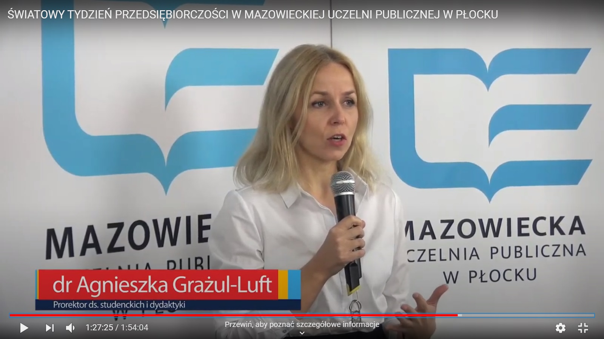
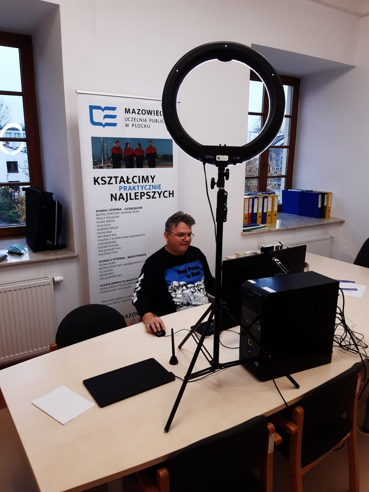

PRACUJĘ W SIECI
Narzędzia ułatwień dostępu
PRACUJĘ W SIECI

Bez względu na to, czym się zajmujemy, każde nasze działanie jest elementem wspólnej całości. To wnioski z tegorocznego Światowego Tygodnia Przedsiębiorczości w Mazowieckiej Uczelni Publicznej w Płocku pt. „Pracuję w sieci”.
- To znakomity sposób, by zachęcać wszystkich do aktywności, rozwoju i budowania sieci kontaktów, a także podejmowania inicjatyw biznesowych. W dotychczasowych edycjach Światowego Tygodnia Przedsiębiorczości organizowanych przez naszą Uczelnię udział wzięło ok. 1500 osób. Pandemia to trudny czas, w jej konsekwencji tegoroczna edycja stała się wyjątkowa, ponieważ w całości odbywa się w formule online. Dzięki temu udało się nam zgromadzić wielu znamienitych gości w jednym terminie. Dodatkowym atutem jest możliwość udziału w naszym przedsięwzięciu nieograniczonej liczby uczestników. – powiedział podczas otwarcia wydarzenia prof. Maciej Słodki – Rektor Mazowieckiej Uczelni Publicznej w Płocku – Z tych wszystkich powodów liczę na rekord frekwencji. – podkreślił Rektor i dodał - Z okazji Międzynarodowego Dnia Studenta życzę studentom wszystkiego najlepszego i powrotu do normalnych zajęć, a także powrotu do wzajemnych, codziennych relacji.

Od kilkunastu lat w projekt Światowego Tygodnia Przedsiębiorczości angażuje się Urząd Miasta Płocka. Prosto ze swojego gabinetu głos zabrał także Andrzej Nowakowski – Prezydent Miasta Płocka – Organizację wydarzenia w nowej rzeczywistości należy potraktować nie tylko jako problem, ale także wyzwanie. Dzisiejsza konferencja będzie próbą odpowiedzi, jak odnaleźć się w nowej normalności oraz jak funkcjonować w rzeczywistości wirtualnej. Sądzę, że nikt nie odpowie na te pytania lepiej niż studenci. Mam nadzieję, że podczas konferencji wspólnie znajdziemy rozwiązania, jak z epidemii wyjść jeszcze silniejszymi.

Przedsięwzięcie zostało podzielone na trzy panele. Pierwszy panel poprzedził wykład gościa specjalnego, którym był Michał Pieprzak, specjalista e-commerce, autor popularnego bloga „Ekomersiak”. W swoim wystąpieniu prelegent zaprezentował, że na skuteczność sprzedaży internetowej składa się wiele czynników, nie tylko wirtualnych (np. poczta pantoflowa). Wskazał, w jaki sposób zwiększać zyski ze sprzedaży, ale także jaką strategię obrać w budowaniu marki swojego sklepu. Specjalista odpowiedział także na pytania studentów, m.in. o rolę social mediów i przyszłości e-commerce.

Podczas pierwszego panelu pt. „Biznes w sieci – moda czy konieczność” uczestnicy dowiedzieli się, że w bardzo krótkim czasie przedsiębiorcy zostali zmuszeni do radykalnej zmiany w swojej działalności. O swoich doświadczeniach opowiedzieli Michał Drelich>, organizator imprez sportowych oraz Łukasz Kołodziejski, płocki restaurator. Przykład biegu masowego, który odbył się w formie wirtualnej, czy restauracji, która w ciągu dnia przeszła w tryb pracy „na wynos” pokazują, że w biznesie nie ma rzeczy niemożliwych.

Drugi panel pt.: „Networking – dobry start do kariery” otworzyła dr Agnieszka Grażul – prorektor ds. studenckich i dydaktyki.
- Panel studencki chcielibyśmy dedykować wszystkim. Mamy nadzieję, spotkanie będzie inspirujące. Do udziału w nim wybraliśmy osoby wykazujące się ponadprzeciętną aktywnością, które nie tylko studiują, ale także pracują i udzielają się społecznie. Ta aktywność podczas studiów procentuje w budowaniu ścieżki kariery zawodowej. Tak to działa, jak nić ciągnąca się z kłębka – powiedziała dr Grażul.
Jako pierwszy w tej części na monitorach widzów pojawił się Tomasz Grudzień, student nowych mediów i pracownik płockiego ratusza. Opowiedział, że przejście ze świata wyczynowego sportu (piłka nożna) do „normalnego życia” nie było łatwe. W budowaniu kariery zawodowej pomogła mu hobbystyczna działalność w social mediach, która zaowocowała po roku podjęciem pracy w ten branży.

O istotnej roli kontaktów międzyludzkich oraz w konsekwencji w realizacji celów opowiadał Damian Malara, dziennikarz PTV Płockiej Telewizji, absolwent ekonomii naszej Uczelni. Podkreślił on, że praca w wydarzeniach na żywo oraz tych w formule online, to dwa inne światy. Zaznaczył jednak, że czeka na powrót do tradycyjnych form pracy, w których czuje się zdecydowanie lepiej.

Ostatnim prelegentem w części ogólnodostępnej był Dawid Pilewski, przewodniczący Rady Samorządu Studentów naszej Uczelni. Swoje wystąpienie dla uczestników spotkania „Pracuję w sieci” wygłosił podczas przerwy w szkoleniu pierwszej pomocy, które tym samym czasie prowadził dla Wojsk Obrony Terytorialnej. Podał też receptę, w jaki sposób połączyć wszystkie aktywności. – Dobry kalendarz! Mam taki kalendarz pielęgniarski z ładnymi naklejkami. Zapisuję tam swoje dyżury w pracy, spotkania i inne ważne sprawy. Tego nie można trzymać w głowie – wyjawił swoją tajemnicę.

Po sesji ogólnodostępnej studenci Mazowieckiej Uczelni Publicznej w Płocku wzięli udział w warsztatach na temat sektora nowoczesnych usług dla biznesu, które poprowadził dr Bartosz Sobotka. Specjalista wskazał w trakcie warsztatów perspektywy kariery zawodowej w sektorze nowoczesnych usług dla biznesu. Prawie 150 uczestników pochyliło się także nad case study pt. jak wygląda praca w sektorze z perspektywy specjalnego gościa z Channel Advisor London.
Ostatnim akcentem Światowego Tygodnia Przedsiębiorczości był wykład dr. Andrzeja Jagodzińskiego pt: Pasja i kreatywność źródłem sukcesu i szczęścia. Warsztaty naszego wykładowcy, z akcentami muzycznymi w tle, cieszyły się takim powodzeniem, że system obsługujący wydarzenie nie nadążał z przyjmowaniem kolejnych słuchaczy.
W sumie we wszystkich panelach tegorocznej edycji Światowego Tygodnia Przedsiębiorczości pt. „Pracuję w sieci” w Mazowieckiej Uczelni Publicznej w Płocku udział wzięło ponad trzy tysiące uczestników.

to międzynarodowy projekt promujący świadomy rozwój, aktywną postawę wobec życia i podejmowanie biznesowych inicjatyw. Jest organizowany od 2008 roku. W poprzednim roku wydarzenia w ramach ŚTP pojawiły się w 170 krajach. Każdego roku w listopadzie organizacje, instytucje i firmy, którym zależy na rozwijaniu przedsiębiorczości, organizują bezpłatne szkolenia, warsztaty, debaty i kampanie promocyjne z zakresu zakładania i rozwijania własnej działalności gospodarczej, budowania sieci kontaktów, rozwijania start-upów, powrotu na rynek pracy, negocjowania z pracodawcą, budowania własnej marki i wielu innych.
W Mazowieckiej Uczelni Publicznej w Płocku Światowy Tydzień Przedsiębiorczości odbywa się cyklicznie od kliku lat. O poprzednich dwóch edycjach możecie przeczytać poniżej:
2018 rok:
https://mazowiecka.edu.pl/swiatowy-tydzien-przedsiebiorczosci-na-pwsz-w-plocku/
2019 rok:
https://mazowiecka.edu.pl/biznesowy-tydzien-mazowieckiej/
Więcej o idei Światowego Dnia Przedsiębiorczości dowiecie się na stronie:
https://tydzienprzedsiebiorczosci.pl/
Jest to bowiem Międzynarodowy Dzień Studenta. Dzięki temu możemy osiągnąć wyjątkowe połączenie – studentów i przedsiębiorczości.
Międzynarodowy Dzień Studenta ustanowiono, by upamiętnić wydarzenia z 17 listopada 1939 roku, kiedy prascy studenci wyszli na ulice, by zaprotestować przeciw wtargnięciu nazistów na terytorium Czechosłowacji. Dziewięć osób rozstrzelano, ponad tysiąc trafiło do obozów koncentracyjnych. Dwa lata później, International Students Council (Międzynarodowa Unia Studentów) ustanowił 17 listopada Międzynarodowym Dniem Studenta. Dziś jest on obchodzony w kilkudziesięciu krajach. To czas, w którym studenci w sposób szczególny starają się zwrócić uwagę na swoje problemy, manifestować własne przekonania i dać wyraz solidarności. Jest to również okazja do organizacji spotkań, konferencji oraz innych wydarzeń.
W roku 2019 w Polsce odbyła się 12. edycja Światowego Tygodnia Przedsiębiorczości.

Doradca i konsultant e-commerce. Autor bloga ekomersiak.pl o tym "Jak założyć, uruchomić i rozwinąć własny sklep internetowy". Pomaga klientom tworzyć i rozwijać skuteczne sklepy internetowe, które wygenerowały dotychczas 90 mln zł sprzedaży. Z branżą internetową i e- commerce związany od ponad 13 lat. Prywatnie szczęśliwy tata trójki dzieci i przykładny partner, przynajmniej tak brzmi oficjalna wersja :)


Założyciel i współwłaściciel agencji SE Group, jednej z wiodących agencji marketingu sportowego w Polsce, która co roku organizuje kilkadziesiąt różnego typu wydarzeń sportowych; specjalista od marketingu i sponsoringu sportowego; w latach 2005-2007 pracował w Fundacji Maraton Warszawski, gdzie był odpowiedzialny za sponsoring i public relations Maratonu i Półmaratonu Warszawskiego; pośredniczył w zawarciu kilkudziesięciu kontraktów sponsoringowych, m.in. z takimi firmami jak: Enea, Orlen, PZU, Unilever, Onico, Citi Handlowy, BZ WBK, Pelion, Carrefour, Adidas, New Balance, Reebok, Mercedes, Wisniowski, Decathlon, Intersport, GOSport, Ruch, Food Care i wiele innych; wieloletni wykładowca na kursach menedżera sportu w Polskiej Akademii Sportu; Absolwent Wydziału Dziennikarstwa i Nauk Politycznych na Uniwersytecie Warszawskim.

przedsiębiorca z branży gastronomicznej. Przez 15 lat przeszedł przez wszystkie szczeble restauracyjnej kariery. Twórca kilku znanych miejscówek w Płocku. Obecnie szef restauracji meksykańskiej Tres Puntos.

Student Mazowieckiej Uczelni Publicznej w Płocku (studia magisterskie z pielęgniarstwa) oraz Uniwersytetu Warszawskiego (zarządzanie - przywództwo i rozwój organizacji). Pielęgniarz, instruktor pierwszej pomocy i ratownictwa. Na studiach zaangażowany w pracę naukową (prelegent podczas kilku międzynarodowych sympozjów zagranicznych oraz aktywny uczestnik kilkunastu konferencji krajowych. Przewodniczący Rady Samorządu Studentów Mazowieckiej Uczelni Publicznej w Płocku. Zaangażowany w życie kilku organizacji pozarządowych, które realizują projekty społeczne.

Absolwent PWSZ w Płocku, aktualnie student Akademii Leona Koźmińskiego w Warszawie (Zarządzanie - socjologia biznesu i mediów), prezenter telewizyjny, mówca oraz konferansjer. Wystąpienia publiczne prowadzi od 19. roku życia. Na swoim koncie ma już wiele poprowadzonych eventów - m.in. koncert jednego z najbardziej rozpoznawalnych raperów w Polsce - Kękę.

Montażysta, operator kamery, czasem fotograf. Przez ponad 20 lat związany z piłką nożną. Po przedwczesnym zakończeniu kariery sportowej, z powodu licznych kontuzji, swoje miejsce odnalazł za sterami auli płockiego ratusza, gdzie tworzy materiały audiowizualne dla Urzędu Miasta Płocka. Miłośnik biegania, ma za sobą też start w triathlonie..
Doktor nauk ekonomicznych (SGH), absolwent stosunków międzynarodowych na Uniwersytecie Warszawskim oraz prawa na UMCS. Dyrektor ds. Rozwoju w Syntea SA, zajmuje się integracją rynku pracy z sektorem edukacji w Polsce i krajach CEE. Animator Sektorowej Rady ds. Kompetencji - Nowoczesne Usługi Biznesowe. Konsultant projektów dla sektora IT i edukacji w kontekście wdrażania idei smart city, budowy Społeczeństwa 4.0 oraz dostosowania oferty kształcenia uczelni do potrzeb rynku pracy, przede wszystkim dla sektora usług dla biznesu (Business Service Sector). Zaczynał pracę zawodową w Ministerstwie Spraw Zagranicznych, gdzie zajmował się pomocą rozwojową. W latach 2008-2011 pracował w Urzędzie Miasta Lublin pełniąc funkcję Kierownika Biura Obsługi Inwestorów oraz Pełnomocnika Prezydenta ds. Podstrefy Lublin, aktywnie uczestnicząc w tworzeniu oferty inwestycyjnej m.in. pod kątem dostosowywania kompetencji sektora edukacji do potrzeb lokalnego rynku pracy. Autor i współautor kilkudziesięciu publikacji (w tym pięciu książek) z dziedziny pomocy rozwojowej i jej efektywności, rozwoju lokalnego oraz zarządzania edukacją.

absolwent Wydziału Zarządzania Uniwersytetu Warszawskiego (dyplom z wyróżnieniem Diploma Honorificum).
Stopień doktora nauk ekonomicznych w dyscyplinie nauk o zarządzaniu otrzymał w Akademii Leona Koźmińskiego. Od 2007 r. pracownik naukowo dydaktyczny płockich uczelni wyższych. Od 2016 roku kierownik Zakładu Zarządzania w Mazowieckiej Uczelni Publicznej. W swoim dorobku naukowym posiada liczne publikacje z zakresu zarządzania, ze szczególnym uwzględnieniem teorii i praktyki zarządzania zasobami ludzkimi. Promotor ok. 600 prac licencjackich i ponad 200 magisterskich.
Zainteresowania:
- nauka o organizacji i zarządzaniu, ze szczególnym uwzględnieniem „miękkich” metod zarządzania zorientowanych na człowieka jako najważniejszego podmiotu organizacji;
- muzyka rockowa, cygańska i rosyjska, gra na gitarze, sport.
© Copyright Damian Bregier & Kamil Łobiński 2020


{kind=link}